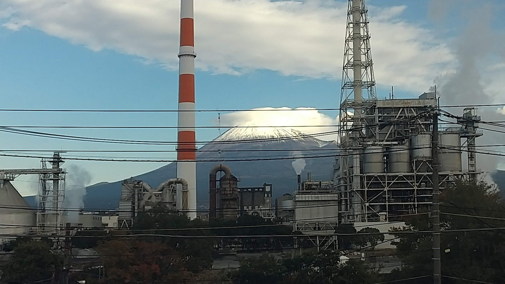

- 区间
- 新富士之前不远
- 座位侧
- E座・往新大阪方向右侧，往东京方向左侧
- 通过时间
- 搭乘希望号从东京出发约45分钟
- 可见时间
- 约10～20秒希望号的概略时间；会随车速、天气与遮蔽物而变动。
背後的故事
为什麽富士山脚聚集了造纸工厂？
造纸需要大量用水。富士市同时拥有经富士山过滤的地下水与富士川的河水，两种水源决定了城市的发展。1890年，总部设於东京的富士制纸在润井川旁的入山濑设厂，生产现今富士市境内最早的西式纸。隔年成为日本第一家自行生产磨木浆的公司，大量供应价格低、品质好的新闻纸。1895年，由地方出资的原田制纸率先在日本机械制造和纸。大正至昭和初期工厂陆续设立，富士成为造纸之城。至今仍有近七十家纸业相关事业所，数量居日本各市町村之首；纸浆、纸与纸制品约占全市制造品出货额三成。车窗可见的日本制纸富士工厂，於2015年由原吉永与富士工厂合并成为现有形态，分为相距约五公里的两区。列车旁经过的是靠近新富士的富士地区。
从东京往新大阪，接近新富士时请看右侧车窗（E座）。往东京时顺序相反，同样的E座位於左侧。
观看重点
如何寻找，以及这座城市制造什麽
看过三岛至新富士的富士山後，继续看E座侧即可。新富士前约一分钟，前景从田野变成工业区。地标是红白相间的高烟囱，周围聚集圆筒槽与管线塔。
这段车窗的趣味，在於工厂与山位於同一方向：富士山在铁路北侧，工厂也在北侧，因此同一扇E座车窗能看到前方烟囱与後方山峰。晴天最清楚，阴天也常有山影从云隙露出。
这座城市的产品，也许就在你家。日本约四成卫生纸产自富士市，此外还有厨房纸巾与再生家庭用纸。当地日常生产以百分之百回收纸制成的卫生纸，在日本卫生用纸产业占有重要地位。窗外掠过的烟囱与储槽，说不定就是今天用纸的产地。
水的故事还有後续。再前进约三分钟，列车横越富士川。E座侧上游的一排白拱，是富士川水管桥；桥体本身就是直径2.2公尺的水管。每天约108万吨工业用水流经此处，目的地正是这些工厂。看似分开的两段车窗，被同一条水路连在一起。
A座侧朝向骏河湾与田子之浦，那里有港口与其他工业设施。但工厂与富士山同框，只能从E座侧看。工厂昼夜运转，清晨与黄昏的白色喷气会映着光；入夜後，厂区照明展开，往往成为窗外唯一清楚可见的景物。
地图
位置一览
打开地图切换景点位置与新干线观赏位置。
你的车窗指南
别错过窗外风景
动态风景
富士市造纸工厂车窗视频
透过车窗视频，看富士市造纸工厂在富士山下掠过。
这段视频使用X官方嵌入功能。
延伸阅读
参考资料
官方指引与车窗风景纪录。